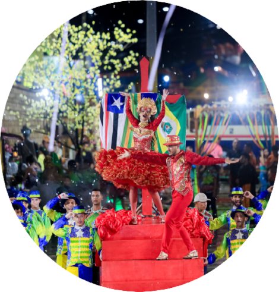

O São João da Igaraçu, em 2024, eterniza-se como uma bela página de livro
da cultura popular brasileira, ecoando a essência que Ariano Suassuna tão
magnificamente soube exaltar
2023
VERÁS QUE UM FILHO TEU NÃO FOGE À LUTA
Tema voltado à Batalha do Jenipapo, um marco importante para a
independência do Brasil que completou o seu bicentenário no
ano de 2023
2022
A FESTA DE CHICO
Em 2022 a Junina Igaraçu enaltece A Festa de São Francisco.
Tantos relatos de devoção demonstram a força dos festejos de
Canindé. Ao longo dos dez dias de programação, estima-se que
um milhão de pessoas tenha visitado o município.

07 Janeiro 2024
Tema para 2024
Junina Igaraçu revela a sua temática para o São João de 2024 voltada à cultura popular brasileira